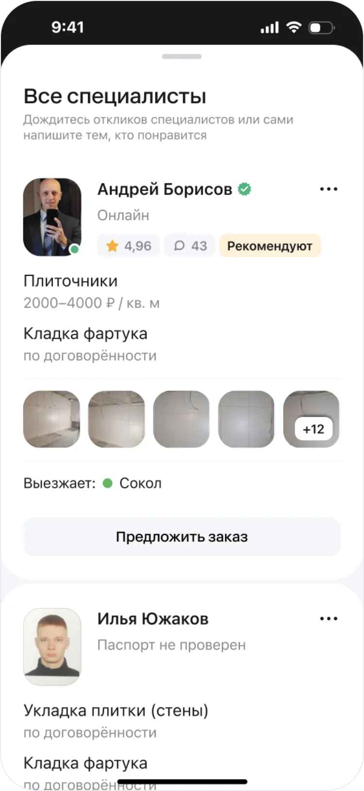
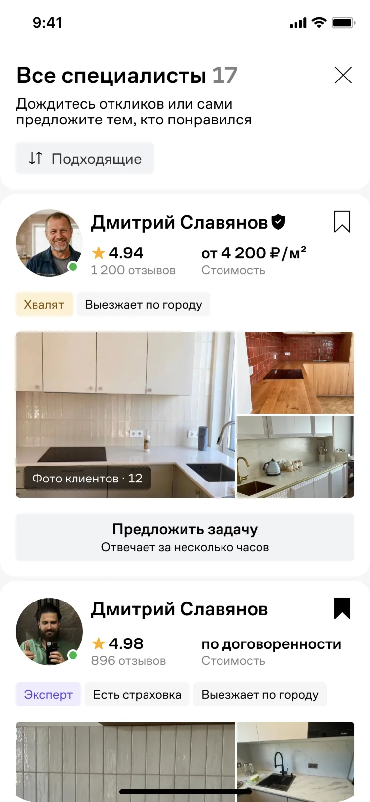
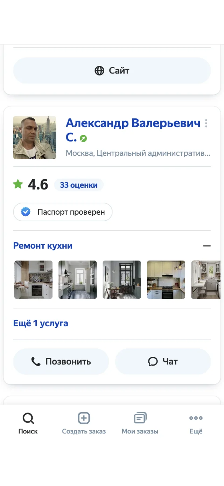
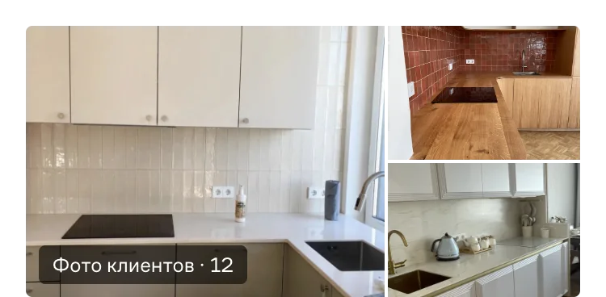
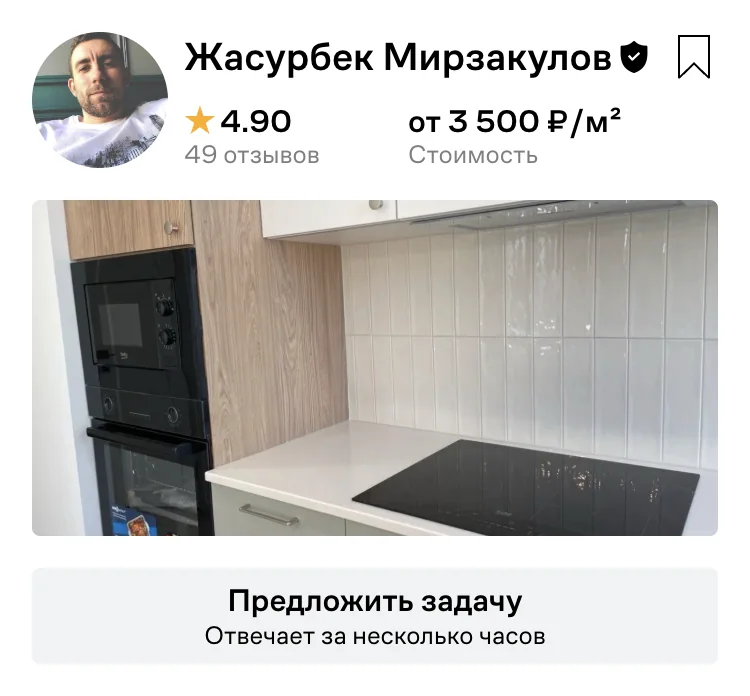
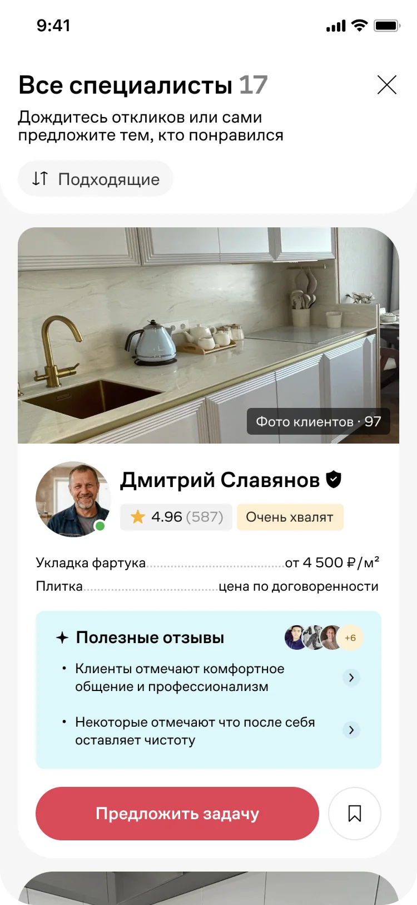

Редизайн ленты специалистов
Задача: улучшить экран выбора специалиста, не меняя продуктовую логику.
Сначала покажу итоговое решение, а ниже расскажу, как я к нему пришла.


Анализ текущего интерфейса
Фильтры
Для удобства использования списка можно добавить фильтры
Статусы присутствия
Дублирование иконки и текстового описания
в одном и том же месте пишется разного рода информация, непредсказуемо. То, что специалист был недавно в сети, как клиенту мне это только говорит о том, что это не «мертвый» аккаунт
Цена
Я не понимала, что значит «Плиточники», в кейсах с психологами увидела, что одинаковые цены дублируются
+ занимают много места
Кнопка
Моя гипотеза, что кнопка может восприниматься неактивной
Проверка документов
Визуально путается с индикатором «В сети», ставлю под сомнение, что нужно дополнительно писать, что паспорт не проверен
Отзывы
Разделено на отдельные сущности, хотя это связанные элементы
Фотографии
Чьи это фото? Портфолио или клиентов?
Общее
Достаточно большие по высоте карточки, а чем больше мастеров увижу, тем выше вероятность найти своего
Референсы
На этом этапе я изучила, как устроен выбор специалиста в российских и зарубежных сервисах. Подходов два. В одних, как на Авито, в центре — услуга: пользователь сравнивает объявления и цены. В других — личность: человек выбирает конкретного мастера по его работам, отзывам и тому, как он общается.
Для вашего продукта я предлагаю сохранить и усилить второй подход. Когда речь о ремонте, люди доверяют не услуге, а человеку, который придёт к ним домой. Поэтому выбор должен строиться вокруг мастера: кто он, что уже сделал и что о нём говорят клиенты. По-моему, это напрямую поддерживает позиционирование продукта и отличает его от площадок объявлений.




Что важно пользователям?
Чтобы понять, как выстроить информацию в карточке специалиста, я поговорила с пятью людьми, которые недавно делали ремонт, и выяснила, что для них важно при выборе мастера. Главными критериями оказались:
1. Отзывы
2. Стоимость (негативно относятся к фразе «цена по договоренности»)
3. Фотографии
4. Как быстро сможет приступить к работе
Выявила интересный барьер:
— недоверие к фото. «Фотографии можно скачать откуда угодно, не факт, что они принадлежат этому мастеру»
Также я опиралась на опрос «Ремонт со СберУслугами». При выборе подрядчика:
70% обращают внимание на репутацию и отзывы о ранее сделанных ремонтах — это главный фактор;
63% ориентируются на стоимость работы;
54% — на гарантии и договор до начала ремонта;
53% — на рекомендации знакомых.
Источник: опрос «Ремонт со СберУслугами», август 2025, РБК Недвижимость
Дизайн карточек






Когда был в сети
«20 минут» и «2 часа» визуально почти одинаковы, и выбор от этого не меняется. Эти статусы я трансформировала в «Отвечает за несколько часов» и перенесла в кнопку
Верификация документов
Визуально отделила от статуса «В сети», если не верифицирован — значка нет.
Теги
Здесь все особенности Профи. Место стало более удобным и масштабируемым.
Предлагаю только 1 акцентный бейдж.
Тег «Выезжает по городу» — замена станциям метро, от станций сразу возникают размышления: а он ко мне поедет?
Отзывы и цена
Теперь стали акцентными, так как являются опорой для пользователя в принятии решения
Фотоотзывы
Решила вынести фотографии клиентов прямо на карточку, так как им доверяют больше. Думаю, можно в приоритете показывать фото клиентов, а если их нет — портфолио
Кнопка
Теперь карточки разделяются, если у клиента есть предложение, пушим клиента ответить на него.
Общее
Карточка стала компактной и может работать как конструктор, если чего-то нет.
Что еще пробовала
Больше информации на карточке. Я пробовала выводить на карточку больше данных, но отказалась от этого: выросла когнитивная нагрузка, и выбирать стало сложнее.
Фото. Фото — главный аргумент при выборе, но не во всех категориях. Например, в задаче «Устранить течь» результат работы почти не виден, и фото пользователю ничего не скажут.
Третий вариант. В целом он работает, но респонденты отмечали, что отзывы в нём плохо заметны.
